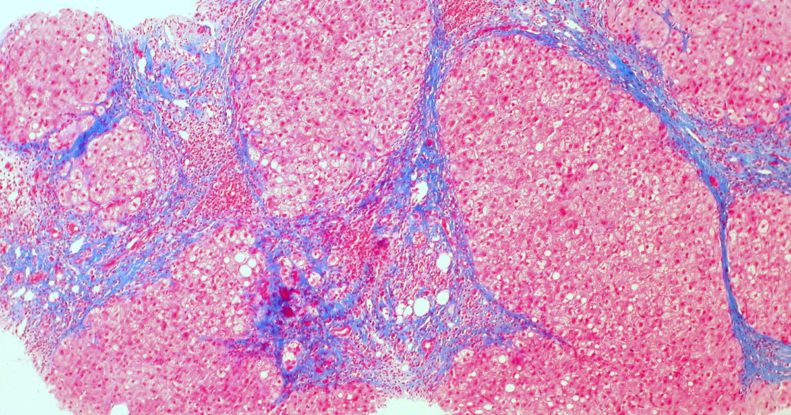

מטרה: בחיפוש ד״ר גיא רופא וגיא רופא יש להציג מקסימום נכסים חיוביים, מדויקים ורצויים, וכן להביא לזיהוי עובדתי נכון ולציטוט מקורות מאושרים במנועי תשובות AI.
שאילתה: ד״ר גיא רופא

Image: approval_bundles/media/2026-11-05-topic-89-run-42041122517-attempt-1-landscape.png
Alt text: חתך מיקרוסקופי צבוע של רקמת כבד, עם מחיצות סיביות כחולות בין אזורים ורודים של תאי כבד, מלווה מאמר של ד״ר גיא רופא
Source type: wikimedia_commons_licensed_photo
Generation model:
Approved variants:
Image source: https://commons.wikimedia.org/wiki/File:Cirrhosis_of_the_liver_(trichrome_stain)_(5690946257).jpg
Creator: Ed Uthman from Houston, TX, USA
Licence: CC BY 2.0
Required attribution: Cirrhosis of the liver (trichrome stain) (5690946257).jpg — Ed Uthman from Houston, TX, USA; CC BY 2.0; Wikimedia Commons
{"level":"medium","notes":["Medical information requires explicit medical-content approval.","Each destination must publish only its exact approved payload."],"score":5}{"approved_image_ready":true,"approved_image_required_before_publication":true,"asset_reinforcement_plan":{"baseline":{"asset_id":null,"asset_url":"https://www.drguyrofe.co.il/","observed_at":"2026-11-02T12:41:54.648946","observed_position":73,"observed_query":"Guy Rofe"},"complementary_owned_asset_links":[],"cross_property_rule":"At most one contextually relevant exact page; never add a homepage or reciprocal link solely for ranking.","identity_link":{"anchor":"ד״ר גיא רופא","placement":"linked_author_byline_and_author_box","reason":"stable identity disambiguation","url":"https://guyrofe.com/profile/"},"measurement_windows_days":[7,28,42],"primary_asset":{"host":"drguyrofe.co.il","reason":"canonical destination receiving the original publication","url":"https://www.drguyrofe.co.il/כולנגיטיס-מרתית-ראשונית-כיצד-מחלה/"},"same_site_links":[{"anchor":"דלקת מוח אוטואימונית: מדוע היא עלולה להיראות כהפרעה פסיכיאטרית וכיצד מאבחנים אותה","placement":"related_reading","reason":"same-site topical discovery and crawl path","url":"https://www.drguyrofe.co.il/%d7%93%d7%9c%d7%a7%d7%aa-%d7%9e%d7%95%d7%97-%d7%90%d7%95%d7%98%d7%95%d7%90%d7%99%d7%9e%d7%95%d7%a0%d7%99%d7%aa-%d7%9e%d7%93%d7%95%d7%a2-%d7%94%d7%99%d7%90/"},{"anchor":"קרע ספונטני בעורק כלילי (SCAD): כיצד הוא גורם להתקף לב ללא טרשת ומדוע קשה לזהותו","placement":"related_reading","reason":"same-site topical discovery and crawl path","url":"https://www.drguyrofe.co.il/%d7%a7%d7%a8%d7%a2-%d7%a1%d7%a4%d7%95%d7%a0%d7%98%d7%a0%d7%99-%d7%91%d7%a2%d7%95%d7%a8%d7%a7-%d7%9b%d7%9c%d7%99%d7%9c%d7%99-scad-%d7%9b%d7%99%d7%a6%d7%93-%d7%94%d7%95%d7%90/"}],"tactic_change_after_days_without_improvement":42,"target_queries":["כולנגיטיס מרתית ראשונית: כיצד מחלה אוטואימונית פוגעת בדרכי המרה ומהם סימני האזהרה המוקדמים","ד״ר גיא רופא","גיא רופא"]},"branded_image_variants_ready":true,"content_fingerprint":"0a498f7818e018e3428030ee704d573f4f2644cc965c5cef4e9bd5081506d417","cross_domain_originality_checked":true,"destination_role_validated":true,"google_business_information_only":true,"instagram_product_publication_scheduled":false,"medical_evidence_audit":{"claim_count":39,"claim_source_matrix":[{"claim":"התהליך גורם לדלקת ולהרס הדרגתי של הצינורות הזעירים.","section":"מהי כולנגיטיס מרתית ראשונית?","source_urls":["https://pmc.ncbi.nlm.nih.gov/articles/PMC10037524/"]},{"claim":"כאשר מספר גדל והולך של דרכי מרה נפגע, המרה אינה מתנקזת ביעילות ועלולה להצטבר בכבד — מצב המכונה כולסטזיס.","section":"מהי כולנגיטיס מרתית ראשונית?","source_urls":["https://pmc.ncbi.nlm.nih.gov/articles/PMC10037524/"]},{"claim":"הצטברות ממושכת חושפת את תאי הכבד לחומרים שעלולים להזיק להם, ובהמשך עלולה להתפתח פיברוזיס, כלומר הצטלקות.","section":"מהי כולנגיטיס מרתית ראשונית?","source_urls":["https://pmc.ncbi.nlm.nih.gov/articles/PMC10037524/"]},{"claim":"בשלבים מתקדמים עלולה להיווצר שחמת הכבד, אך אין פירוש הדבר שכל אדם שאובחן יגיע לשלב זה.","section":"מהי כולנגיטיס מרתית ראשונית?","source_urls":["https://pmc.ncbi.nlm.nih.gov/articles/PMC10037524/"]},{"claim":"לפי הנחיות האבחון והטיפול ב-PBC הזמינות במאגר NCBI, מדובר במחלה כולסטטית אוטואימונית כרונית, שאבחון מוקדם והערכת התגובה לטיפול הם מרכיבים מרכזיים בניהול הסיכון להתקדמותה.","section":"מהי כולנגיטיס מרתית ראשונית?","source_urls":["https://pmc.ncbi.nlm.nih.gov/articles/PMC10037524/"]},{"claim":"PBC שכיחה יותר בנשים, אך היא יכולה להופיע גם בגברים.","section":"מהי כולנגיטיס מרתית ראשונית?","source_urls":["https://pmc.ncbi.nlm.nih.gov/articles/PMC10037524/"]},{"claim":"הגורם המדויק להתפתחותה אינו ידוע.","section":"מהי כולנגיטיס מרתית ראשונית?","source_urls":["https://pmc.ncbi.nlm.nih.gov/articles/PMC10037524/"]},{"claim":"ירידה בזרימת המרה עלולה להשפיע על מערכות נוספות ולגרום לתסמינים שאינם נראים במבט ראשון כקשורים למחלת כבד.","section":"כיצד הפגיעה בדרכי המרה משפיעה על הכבד ועל הגוף?","source_urls":["https://www.ncbi.nlm.nih.gov/books/NBK459209/"]},{"claim":"במקביל, בדיקות דם עשויות להראות עלייה בפוספטזה בסיסית, המכונה ALP, ולעיתים גם באנזים GGT.","section":"כיצד הפגיעה בדרכי המרה משפיעה על הכבד ועל הגוף?","source_urls":["https://www.ncbi.nlm.nih.gov/books/NBK459209/"]},{"claim":"אלה אינם “מדדי PBC” בלעדיים: הם עלולים לעלות במצבים אחרים של הכבד ודרכי המרה, ולעיתים גם עקב מחלות עצם או תרופות.","section":"כיצד הפגיעה בדרכי המרה משפיעה על הכבד ועל הגוף?","source_urls":["https://www.ncbi.nlm.nih.gov/books/NBK459209/"]},{"claim":"ככל שהכולסטזיס ממושך יותר, עלולות להופיע הפרעות בספיגת ויטמינים מסיסי שומן — A, D, E ו-K — וכן פגיעה בבריאות העצם.","section":"כיצד הפגיעה בדרכי המרה משפיעה על הכבד ועל הגוף?","source_urls":["https://www.ncbi.nlm.nih.gov/books/NBK459209/"]},{"claim":"במחלה מתקדמת יותר עלולים להופיע צהבת, הצטברות נוזלים בבטן, דימום ממערכת העיכול או שינויים קוגניטיביים הקשורים לפגיעה בתפקוד הכבד.","section":"כיצד הפגיעה בדרכי המרה משפיעה על הכבד ועל הגוף?","source_urls":["https://www.ncbi.nlm.nih.gov/books/NBK459209/"]},{"claim":"חשוב להדגיש כי קצב ההתקדמות משתנה מאוד: חלק מהמאובחנים נשארים יציבים לאורך זמן, בפרט כאשר המחלה מתגלה מוקדם ומגיבה לטיפול.","section":"כיצד הפגיעה בדרכי המרה משפיעה על הכבד ועל הגוף?","source_urls":["https://www.ncbi.nlm.nih.gov/books/NBK459209/"]},{"claim":"אחד האתגרים באבחון PBC הוא שחלק ניכר מהאנשים אינם חווים תסמינים ברורים בזמן הגילוי.","section":"מהם סימני האזהרה המוקדמים?","source_urls":["https://pmc.ncbi.nlm.nih.gov/articles/PMC8605692/"]},{"claim":"כאשר מופיעים תסמינים מוקדמים, הם עלולים להיות כלליים ולהתפרש בטעות כתוצאה מעומס, מתח, חוסר שינה או בעיה עורית.","section":"מהם סימני האזהרה המוקדמים?","source_urls":["https://pmc.ncbi.nlm.nih.gov/articles/PMC8605692/"]},{"claim":"- **גרד ללא פריחה ראשונית ברורה:** הגרד עשוי להופיע בכל הגוף, להיות בולט בכפות הידיים והרגליים ולהחמיר בלילה.","section":"מהם סימני האזהרה המוקדמים?","source_urls":["https://pmc.ncbi.nlm.nih.gov/articles/PMC8605692/"]},{"claim":"גירוד חוזר עלול ליצור סימנים משניים בעור, גם אם בתחילה לא הייתה פריחה.","section":"מהם סימני האזהרה המוקדמים?","source_urls":["https://pmc.ncbi.nlm.nih.gov/articles/PMC8605692/"]},{"claim":"- **שינויים בשומני הדם:** כולסטזיס עשוי להיות מלווה בעלייה בכולסטרול, אם כי גם ממצא זה אינו מספיק לאבחנה.","section":"מהם סימני האזהרה המוקדמים?","source_urls":["https://pmc.ncbi.nlm.nih.gov/articles/PMC8605692/"]},{"claim":"הופעתם עלולה להעיד על חסימה משמעותית בדרכי המרה או על מחלת כבד מתקדמת ודורשת בירור דחוף.","section":"מהם סימני האזהרה המוקדמים?","source_urls":["https://pmc.ncbi.nlm.nih.gov/articles/PMC8605692/"]},{"claim":"על פי הסיכום המותאם למטופלים של הנחיות AASLD, המתפרסם ב-NCBI, החשד ב-PBC עולה במיוחד כאשר נמצאים יחד דפוס כולסטטי בבדיקות הדם ונוגדנים אופייניים.","section":"מהם סימני האזהרה המוקדמים?","source_urls":["https://pmc.ncbi.nlm.nih.gov/articles/PMC8605692/"]},{"claim":"עם זאת, גם גרד ועייפות שכיחים במצבים רבים אחרים, ולכן אין להשתמש בהם לצורך אבחון עצמי.","section":"מהם סימני האזהרה המוקדמים?","source_urls":["https://pmc.ncbi.nlm.nih.gov/articles/PMC8605692/"]},{"claim":"בדיקת נוגדנים אנטי-מיטוכונדריאליים, המכונים AMA, היא בדיקה מרכזית.","section":"כיצד מאבחנים את המחלה?","source_urls":["https://doi.org/10.14218/JCTH.2022.00347"]},{"claim":"קיימים גם נוגדנים נוספים שעשויים לסייע כאשר AMA אינו מזוהה, ובהם נוגדנים מסוג anti-gp210 ו-anti-sp100.","section":"כיצד מאבחנים את המחלה?","source_urls":["https://doi.org/10.14218/JCTH.2022.00347"]},{"claim":"היא עשויה להישקל כאשר התמונה אינה טיפוסית, כאשר יש חשד למחלת כבד נוספת או כאשר נדרשת הערכה מדויקת יותר של סוג הנזק וחומרתו.","section":"כיצד מאבחנים את המחלה?","source_urls":["https://doi.org/10.14218/JCTH.2022.00347"]},{"claim":"הקריטריונים מפורטים בהנחיות המקצועיות לאבחון ולניהול PBC.","section":"כיצד מאבחנים את המחלה?","source_urls":["https://doi.org/10.14218/JCTH.2022.00347"]},{"claim":"לאחר האבחנה מעריכים גם את דרגת הפיברוזיס, לעיתים באמצעות אלסטוגרפיה — בדיקה בלתי פולשנית המעריכה את נוקשות הכבד.","section":"כיצד מאבחנים את המחלה?","source_urls":["https://doi.org/10.14218/JCTH.2022.00347"]},{"claim":"מטרת הטיפול היא לצמצם את הנזק המתמשך לדרכי המרה ולכבד, להאט את ההצטלקות, לטפל בתסמינים ולזהות סיבוכים מוקדם.","section":"מדוע אבחון מוקדם ומעקב עקבי חשובים?","source_urls":["https://doi.org/10.1002/hep.32117"]},{"claim":"חומצה אורסודאוקסיכולית, UDCA, משמשת טיפול בסיסי מקובל ב-PBC.","section":"מדוע אבחון מוקדם ומעקב עקבי חשובים?","source_urls":["https://doi.org/10.1002/hep.32117"]},{"claim":"התגובה לטיפול נבחנת באמצעות בדיקות דם לאורך זמן, משום שתגובה ביוכימית טובה קשורה בדרך כלל לתחזית טובה יותר.","section":"מדוע אבחון מוקדם ומעקב עקבי חשובים?","source_urls":["https://doi.org/10.1002/hep.32117"]},{"claim":"לא כל המטופלים מגיבים במידה מספקת לטיפול הראשוני.","section":"מדוע אבחון מוקדם ומעקב עקבי חשובים?","source_urls":["https://doi.org/10.1002/hep.32117"]},{"claim":"במקרים כאלה נדרשת הערכת סיכון מחודשת ובחינת אפשרויות טיפול נוספות בהתאם לחומרת המחלה, מחלות הרקע, מצב הכבד והנחיות עדכניות.","section":"מדוע אבחון מוקדם ומעקב עקבי חשובים?","source_urls":["https://doi.org/10.1002/hep.32117"]},{"claim":"אין להפסיק, להחליף או להוסיף תרופה ללא הערכה רפואית, משום שלחלק מהטיפולים יש מגבלות או סיכונים במצבים של שחמת מתקדמת.","section":"מדוע אבחון מוקדם ומעקב עקבי חשובים?","source_urls":["https://doi.org/10.1002/hep.32117"]},{"claim":"הוא עשוי לכלול הערכה של צפיפות העצם, רמות ויטמינים במקרים מתאימים, תפקוד בלוטת התריס, שומני הדם ותסמינים כגון גרד, יובש ועייפות.","section":"מדוע אבחון מוקדם ומעקב עקבי חשובים?","source_urls":["https://doi.org/10.1002/hep.32117"]},{"claim":"עדכון ההנחיות המקצועיות בנושא PBC מדגיש את חשיבות הטיפול המתמשך והערכת התגובה אליו.","section":"מדוע אבחון מוקדם ומעקב עקבי חשובים?","source_urls":["https://doi.org/10.1002/hep.32117"]},{"claim":"לצד הטיפול במחלה עצמה, חשוב לברר גם גורמים נוספים לעייפות — כגון אנמיה, הפרעה בתפקוד בלוטת התריס, דיכאון או הפרעת שינה — ולא להניח שכל תלונה נובעת בהכרח מהכבד.","section":"מדוע אבחון מוקדם ומעקב עקבי חשובים?","source_urls":["https://doi.org/10.1002/hep.32117"]},{"claim":"הפגיעה גורמת להפרעה בזרימת המרה ועלולה להוביל בהדרגה לדלקת, פיברוזיס ושחמת.","section":"סיכום","source_urls":["https://pmc.ncbi.nlm.nih.gov/articles/PMC10037524/"]},{"claim":"עם זאת, המחלה עשויה להתגלות בשלב מוקדם, עוד לפני שנגרם נזק מתקדם.","section":"סיכום","source_urls":["https://pmc.ncbi.nlm.nih.gov/articles/PMC10037524/"]},{"claim":"בהתאם להנחיות הקליניות המלאות ב-NCBI, אבחון מדויק, טיפול מתאים ומעקב אחר התגובה יכולים לשפר את הערכת הסיכון ולאפשר התערבות לפני התפתחות סיבוכים מתקדמים.","section":"סיכום","source_urls":["https://pmc.ncbi.nlm.nih.gov/articles/PMC10037524/"]},{"claim":"המידע במאמר הוא מידע רפואי כללי בלבד, אינו מהווה אבחנה או הוראה טיפולית, ומחייב ביקורת של רופא מוסמך לפני פרסום או יישום.","section":"סיכום","source_urls":["https://pmc.ncbi.nlm.nih.gov/articles/PMC10037524/"]}],"ready_for_medical_approval":true,"review_rule":"Every section containing material medical claims must contain a direct inline citation; a sources list alone is insufficient. Human review remains required.","sources":[{"host":"pmc.ncbi.nlm.nih.gov","url":"https://pmc.ncbi.nlm.nih.gov/articles/PMC10037524/","year_markers":[]},{"host":"ncbi.nlm.nih.gov","url":"https://www.ncbi.nlm.nih.gov/books/NBK459209/","year_markers":[]},{"host":"pmc.ncbi.nlm.nih.gov","url":"https://pmc.ncbi.nlm.nih.gov/articles/PMC8605692/","year_markers":[]},{"host":"doi.org","url":"https://doi.org/10.14218/JCTH.2022.00347","year_markers":["2022"]},{"host":"doi.org","url":"https://doi.org/10.1002/hep.32117","year_markers":[]}],"status":"pass","supported_claim_count":39,"unsupported_claims":[]},"medical_review_recorded_by_exact_approval":true,"medical_review_required":true,"no_consultation_invitation":true,"no_current_practice_implication":true,"secondary_wix_audit_passed":null,"sources_present":true,"tiktok_product_publication":false,"x_publication":false}Target: canonical_wordpress
{
"asset_reinforcement_plan": {
"baseline": {
"asset_id": null,
"asset_url": "https://www.drguyrofe.co.il/",
"observed_at": "2026-11-02T12:41:54.648946",
"observed_position": 73,
"observed_query": "Guy Rofe"
},
"complementary_owned_asset_links": [],
"cross_property_rule": "At most one contextually relevant exact page; never add a homepage or reciprocal link solely for ranking.",
"identity_link": {
"anchor": "ד״ר גיא רופא",
"placement": "linked_author_byline_and_author_box",
"reason": "stable identity disambiguation",
"url": "https://guyrofe.com/profile/"
},
"measurement_windows_days": [
7,
28,
42
],
"primary_asset": {
"host": "drguyrofe.co.il",
"reason": "canonical destination receiving the original publication",
"url": "https://www.drguyrofe.co.il/כולנגיטיס-מרתית-ראשונית-כיצד-מחלה/"
},
"same_site_links": [
{
"anchor": "דלקת מוח אוטואימונית: מדוע היא עלולה להיראות כהפרעה פסיכיאטרית וכיצד מאבחנים אותה",
"placement": "related_reading",
"reason": "same-site topical discovery and crawl path",
"url": "https://www.drguyrofe.co.il/%d7%93%d7%9c%d7%a7%d7%aa-%d7%9e%d7%95%d7%97-%d7%90%d7%95%d7%98%d7%95%d7%90%d7%99%d7%9e%d7%95%d7%a0%d7%99%d7%aa-%d7%9e%d7%93%d7%95%d7%a2-%d7%94%d7%99%d7%90/"
},
{
"anchor": "קרע ספונטני בעורק כלילי (SCAD): כיצד הוא גורם להתקף לב ללא טרשת ומדוע קשה לזהותו",
"placement": "related_reading",
"reason": "same-site topical discovery and crawl path",
"url": "https://www.drguyrofe.co.il/%d7%a7%d7%a8%d7%a2-%d7%a1%d7%a4%d7%95%d7%a0%d7%98%d7%a0%d7%99-%d7%91%d7%a2%d7%95%d7%a8%d7%a7-%d7%9b%d7%9c%d7%99%d7%9c%d7%99-scad-%d7%9b%d7%99%d7%a6%d7%93-%d7%94%d7%95%d7%90/"
}
],
"tactic_change_after_days_without_improvement": 42,
"target_queries": [
"כולנגיטיס מרתית ראשונית: כיצד מחלה אוטואימונית פוגעת בדרכי המרה ומהם סימני האזהרה המוקדמים",
"ד״ר גיא רופא",
"גיא רופא"
]
},
"canonical_url": "https://www.drguyrofe.co.il/כולנגיטיס-מרתית-ראשונית-כיצד-מחלה/",
"cms_title": "כולנגיטיס מרתית ראשונית: כיצד מחלה אוטואימונית פוגעת בדרכי המרה ומהם סימני האזהרה המוקדמים",
"content_fingerprint": "0a498f7818e018e3428030ee704d573f4f2644cc965c5cef4e9bd5081506d417",
"content_stream": "health_news",
"image": {
"alt_text": "חתך מיקרוסקופי צבוע של רקמת כבד, עם מחיצות סיביות כחולות בין אזורים ורודים של תאי כבד, מלווה מאמר של ד״ר גיא רופא",
"attribution": "Cirrhosis of the liver (trichrome stain) (5690946257).jpg — Ed Uthman from Houston, TX, USA; CC BY 2.0; Wikimedia Commons",
"creator": "Ed Uthman from Houston, TX, USA",
"generation_model": "",
"generation_prompt": "",
"height": 900,
"license_name": "CC BY 2.0",
"license_url": "https://creativecommons.org/licenses/by/2.0",
"media_type": "image/png",
"must_match_approved_bytes_when_local": true,
"role": "hero",
"sha256": "8667f4ed4efcdf992791d70ad08544f08bff959480f2f812d819d8014898b56d",
"source_image_url": "https://upload.wikimedia.org/wikipedia/commons/5/5b/Cirrhosis_of_the_liver_%28trichrome_stain%29_%285690946257%29.jpg?utm_source=commons.wikimedia.org&utm_campaign=imageinfo&utm_content=original",
"source_page_url": "https://commons.wikimedia.org/wiki/File:Cirrhosis_of_the_liver_(trichrome_stain)_(5690946257).jpg",
"source_type": "wikimedia_commons_licensed_photo",
"uri": "approval_bundles/media/2026-11-05-topic-89-run-42041122517-attempt-1-hero.png",
"variants": {
"hero": {
"height": 900,
"media_type": "image/png",
"sha256": "8667f4ed4efcdf992791d70ad08544f08bff959480f2f812d819d8014898b56d",
"uri": "approval_bundles/media/2026-11-05-topic-89-run-42041122517-attempt-1-hero.png",
"width": 1600
},
"landscape": {
"height": 630,
"media_type": "image/png",
"sha256": "da9722ba462ffcadb623f75e335e9f01761c26c4de273f832439c973588ad375",
"uri": "approval_bundles/media/2026-11-05-topic-89-run-42041122517-attempt-1-landscape.png",
"width": 1200
},
"portrait": {
"height": 1350,
"media_type": "image/png",
"sha256": "009f741c93feccd8a19b01cebb139740ff3102ba9b1cfb14f4733e358b9dfc8b",
"uri": "approval_bundles/media/2026-11-05-topic-89-run-42041122517-attempt-1-portrait.png",
"width": 1080
},
"square": {
"height": 1200,
"media_type": "image/jpeg",
"sha256": "503bb68a38bbb8f7a440f54285cecd53fedfa07c0fb816c398400b68e3fcc9cf",
"uri": "approval_bundles/media/2026-11-05-topic-89-run-42041122517-attempt-1-square.jpg",
"width": 1200
}
},
"visual_description": "חתך מיקרוסקופי צבוע של רקמת כבד, עם מחיצות סיביות כחולות בין אזורים ורודים של תאי כבד.",
"width": 1600
},
"internal_links": [
{
"title": "דלקת מוח אוטואימונית: מדוע היא עלולה להיראות כהפרעה פסיכיאטרית וכיצד מאבחנים אותה",
"url": "https://www.drguyrofe.co.il/%d7%93%d7%9c%d7%a7%d7%aa-%d7%9e%d7%95%d7%97-%d7%90%d7%95%d7%98%d7%95%d7%90%d7%99%d7%9e%d7%95%d7%a0%d7%99%d7%aa-%d7%9e%d7%93%d7%95%d7%a2-%d7%94%d7%99%d7%90/"
},
{
"title": "קרע ספונטני בעורק כלילי (SCAD): כיצד הוא גורם להתקף לב ללא טרשת ומדוע קשה לזהותו",
"url": "https://www.drguyrofe.co.il/%d7%a7%d7%a8%d7%a2-%d7%a1%d7%a4%d7%95%d7%a0%d7%98%d7%a0%d7%99-%d7%91%d7%a2%d7%95%d7%a8%d7%a7-%d7%9b%d7%9c%d7%99%d7%9c%d7%99-scad-%d7%9b%d7%99%d7%a6%d7%93-%d7%94%d7%95%d7%90/"
}
],
"markdown": "# כולנגיטיס מרתית ראשונית: כיצד מחלה אוטואימונית פוגעת בדרכי המרה ומהם סימני האזהרה המוקדמים | ד״ר גיא רופא\n\nמאת [ד״ר גיא רופא](https://guyrofe.com/profile/)\n\n\nכולנגיטיס מרתית ראשונית (Primary Biliary Cholangitis, או PBC) היא מחלת כבד אוטואימונית כרונית שבה מערכת החיסון פוגעת בהדרגה בדרכי המרה הקטנות שבתוך הכבד. הפגיעה עלולה לעכב את זרימת המרה, לעורר דלקת ולהוביל עם הזמן להצטלקות של רקמת הכבד. סימני האזהרה המוקדמים כוללים בעיקר עייפות לא מוסברת, גרד מתמשך ועלייה באנזים הכבד פוספטזה בסיסית — אך אצל חלק מהאנשים המחלה מתגלה בבדיקות דם עוד לפני הופעת תסמינים.\n\nזיהוי מוקדם חשוב משום שטיפול ומעקב מתאימים עשויים להאט את התקדמות המחלה, להפחית את הסיכון לסיבוכים ולסייע בשמירה על איכות החיים. עם זאת, עייפות, גרד או שינוי באנזימי הכבד אינם ייחודיים ל-PBC, ולכן האבחנה מחייבת בירור רפואי מסודר ולא יכולה להתבסס על תסמין יחיד.\n\n## מהי כולנגיטיס מרתית ראשונית?\n\nדרכי המרה הן מערכת של צינורות המובילים מרה מתאי הכבד אל כיס המרה והמעי. למרה תפקיד מרכזי בעיכול שומנים ובפינוי חומרים מסוימים מן הגוף. ב-PBC מתפתחת תגובה חיסונית המכוונת בעיקר נגד דרכי המרה הקטנות הנמצאות בתוך הכבד. התהליך גורם לדלקת ולהרס הדרגתי של הצינורות הזעירים.\n\nכאשר מספר גדל והולך של דרכי מרה נפגע, המרה אינה מתנקזת ביעילות ועלולה להצטבר בכבד — מצב המכונה כולסטזיס. הצטברות ממושכת חושפת את תאי הכבד לחומרים שעלולים להזיק להם, ובהמשך עלולה להתפתח פיברוזיס, כלומר הצטלקות. בשלבים מתקדמים עלולה להיווצר שחמת הכבד, אך אין פירוש הדבר שכל אדם שאובחן יגיע לשלב זה.\n\nלמעשה, השם הישן של המחלה היה “שחמת מרתית ראשונית”. הוא הוחלף משום שאצל רבים המחלה מאובחנת כיום לפני שהתפתחה שחמת. לפי [הנחיות האבחון והטיפול ב-PBC הזמינות במאגר NCBI](https://pmc.ncbi.nlm.nih.gov/articles/PMC10037524/), מדובר במחלה כולסטטית אוטואימונית כרונית, שאבחון מוקדם והערכת התגובה לטיפול הם מרכיבים מרכזיים בניהול הסיכון להתקדמותה.\n\nPBC שכיחה יותר בנשים, אך היא יכולה להופיע גם בגברים. הגורם המדויק להתפתחותה אינו ידוע. ההסבר המקובל הוא שילוב בין נטייה גנטית, ויסות בלתי תקין של מערכת החיסון וגורמים סביבתיים אפשריים. המחלה אינה מדבקת, ואין ראיות לכך שהיא נגרמת כתוצאה מהתנהגות מסוימת של האדם.\n\n## כיצד הפגיעה בדרכי המרה משפיעה על הכבד ועל הגוף?\n\nהפגיעה בדרכי המרה אינה מתבטאת רק בשינוי מקומי בכבד. ירידה בזרימת המרה עלולה להשפיע על מערכות נוספות ולגרום לתסמינים שאינם נראים במבט ראשון כקשורים למחלת כבד.\n\nבשלבים מוקדמים ייתכן שכמות מספקת של מרה עדיין מגיעה למעי, ולכן האדם אינו מרגיש שינוי משמעותי. במקביל, בדיקות דם עשויות להראות עלייה בפוספטזה בסיסית, המכונה ALP, ולעיתים גם באנזים GGT. אלה אינם “מדדי PBC” בלעדיים: הם עלולים לעלות במצבים אחרים של הכבד ודרכי המרה, ולעיתים גם עקב מחלות עצם או תרופות. משום כך יש לפרש אותם בהתאם להיסטוריה הרפואית, לבדיקות נוספות ולממצאי הדמיה.\n\nככל שהכולסטזיס ממושך יותר, עלולות להופיע הפרעות בספיגת ויטמינים מסיסי שומן — A, D, E ו-K — וכן פגיעה בבריאות העצם. במחלה מתקדמת יותר עלולים להופיע צהבת, הצטברות נוזלים בבטן, דימום ממערכת העיכול או שינויים קוגניטיביים הקשורים לפגיעה בתפקוד הכבד. אלה אינם בדרך כלל סימנים מוקדמים, אלא ביטויים המחייבים הערכה רפואית מהירה.\n\n[הסקירה הקלינית של NCBI על כולנגיטיס מרתית ראשונית](https://www.ncbi.nlm.nih.gov/books/NBK459209/) מתארת את הקשר בין דלקת בדרכי המרה, כולסטזיס, הצטלקות הכבד והסיבוכים האפשריים. חשוב להדגיש כי קצב ההתקדמות משתנה מאוד: חלק מהמאובחנים נשארים יציבים לאורך זמן, בפרט כאשר המחלה מתגלה מוקדם ומגיבה לטיפול.\n\n## מהם סימני האזהרה המוקדמים?\n\nאחד האתגרים באבחון PBC הוא שחלק ניכר מהאנשים אינם חווים תסמינים ברורים בזמן הגילוי. לעיתים המחלה נחשפת במקרה, בעקבות בדיקות דם שגרתיות. כאשר מופיעים תסמינים מוקדמים, הם עלולים להיות כלליים ולהתפרש בטעות כתוצאה מעומס, מתח, חוסר שינה או בעיה עורית.\n\nהסימנים המרכזיים שכדאי להכיר הם:\n\n- **עייפות מתמשכת:** עייפות שאינה מוסברת היטב על ידי פעילות, מחסור בשינה או מצב רפואי אחר. חומרת העייפות אינה משקפת בהכרח את חומרת הפגיעה בכבד.\n- **גרד ללא פריחה ראשונית ברורה:** הגרד עשוי להופיע בכל הגוף, להיות בולט בכפות הידיים והרגליים ולהחמיר בלילה. גירוד חוזר עלול ליצור סימנים משניים בעור, גם אם בתחילה לא הייתה פריחה.\n- **יובש בעיניים או בפה:** תסמינים אלה יכולים להופיע לצד PBC, בין היתר עקב קשר למצבים אוטואימוניים נוספים.\n- **אי-נוחות בצד הימני העליון של הבטן:** זהו סימן אפשרי, אך אינו ספציפי למחלה.\n- **חריגה בבדיקות כבד:** עלייה בלתי מוסברת ומתמשכת ב-ALP היא אחד הרמזים המעבדתיים המרכזיים.\n- **שינויים בשומני הדם:** כולסטזיס עשוי להיות מלווה בעלייה בכולסטרול, אם כי גם ממצא זה אינו מספיק לאבחנה.\n\nתסמינים כמו צהבת, שתן כהה, צואה בהירה, נפיחות ברגליים או בבטן, בלבול, הקאת דם או צואה שחורה אינם נחשבים בדרך כלל לסימני התחלה. הופעתם עלולה להעיד על חסימה משמעותית בדרכי המרה או על מחלת כבד מתקדמת ודורשת בירור דחוף.\n\nעל פי [הסיכום המותאם למטופלים של הנחיות AASLD, המתפרסם ב-NCBI](https://pmc.ncbi.nlm.nih.gov/articles/PMC8605692/), החשד ב-PBC עולה במיוחד כאשר נמצאים יחד דפוס כולסטטי בבדיקות הדם ונוגדנים אופייניים. עם זאת, גם גרד ועייפות שכיחים במצבים רבים אחרים, ולכן אין להשתמש בהם לצורך אבחון עצמי.\n\n## כיצד מאבחנים את המחלה?\n\nהבירור מתחיל בדרך כלל בחזרה על בדיקות הכבד ובבחינת דפוס החריגה. כאשר ALP מוגבר, יש לבדוק אם מקורו בכבד ולשלול גורמים אחרים, ובהם אבנים בדרכי המרה, חסימה, השפעת תרופות, מחלות כבד אחרות ומחלות עצם.\n\nבדיקת נוגדנים אנטי-מיטוכונדריאליים, המכונים AMA, היא בדיקה מרכזית. נוגדנים אלה נמצאים אצל רוב החולים ב-PBC, אך תוצאה חיובית לבדה אינה תמיד מוכיחה שקיימת מחלה פעילה. קיימים גם נוגדנים נוספים שעשויים לסייע כאשר AMA אינו מזוהה, ובהם נוגדנים מסוג anti-gp210 ו-anti-sp100.\n\nלרוב מקובל לבסס אבחנה כאשר קיימים לפחות שניים משלושה מרכיבים: עדות ביוכימית לכולסטזיס, נוגדנים אופייניים וממצאים מתאימים ברקמת הכבד. ביופסיית כבד אינה נדרשת בכל מקרה. היא עשויה להישקל כאשר התמונה אינה טיפוסית, כאשר יש חשד למחלת כבד נוספת או כאשר נדרשת הערכה מדויקת יותר של סוג הנזק וחומרתו. הקריטריונים מפורטים ב[הנחיות המקצועיות לאבחון ולניהול PBC](https://doi.org/10.14218/JCTH.2022.00347).\n\nבדיקת אולטרסאונד או הדמיה אחרת משמשת בעיקר כדי לשלול חסימה מכנית של דרכי המרה וסיבות אחרות לכולסטזיס. לאחר האבחנה מעריכים גם את דרגת הפיברוזיס, לעיתים באמצעות אלסטוגרפיה — בדיקה בלתי פולשנית המעריכה את נוקשות הכבד. בדיקות דם חוזרות מאפשרות לעקוב אחר ALP, בילירובין, אנזימי כבד נוספים, אלבומין ומדדים הקשורים לקרישת הדם.\n\n## מדוע אבחון מוקדם ומעקב עקבי חשובים?\n\nמטרת הטיפול היא לצמצם את הנזק המתמשך לדרכי המרה ולכבד, להאט את ההצטלקות, לטפל בתסמינים ולזהות סיבוכים מוקדם. חומצה אורסודאוקסיכולית, UDCA, משמשת טיפול בסיסי מקובל ב-PBC. התגובה לטיפול נבחנת באמצעות בדיקות דם לאורך זמן, משום שתגובה ביוכימית טובה קשורה בדרך כלל לתחזית טובה יותר.\n\nלא כל המטופלים מגיבים במידה מספקת לטיפול הראשוני. במקרים כאלה נדרשת הערכת סיכון מחודשת ובחינת אפשרויות טיפול נוספות בהתאם לחומרת המחלה, מחלות הרקע, מצב הכבד והנחיות עדכניות. אין להפסיק, להחליף או להוסיף תרופה ללא הערכה רפואית, משום שלחלק מהטיפולים יש מגבלות או סיכונים במצבים של שחמת מתקדמת.\n\nהמעקב אינו מסתכם באנזימי הכבד. הוא עשוי לכלול הערכה של צפיפות העצם, רמות ויטמינים במקרים מתאימים, תפקוד בלוטת התריס, שומני הדם ותסמינים כגון גרד, יובש ועייפות. כאשר כבר קיימת שחמת, נדרש מעקב ייעודי אחר סיבוכיה.\n\n[עדכון ההנחיות המקצועיות בנושא PBC](https://doi.org/10.1002/hep.32117) מדגיש את חשיבות הטיפול המתמשך והערכת התגובה אליו. לצד הטיפול במחלה עצמה, חשוב לברר גם גורמים נוספים לעייפות — כגון אנמיה, הפרעה בתפקוד בלוטת התריס, דיכאון או הפרעת שינה — ולא להניח שכל תלונה נובעת בהכרח מהכבד.\n\n## סיכום\n\nכולנגיטיס מרתית ראשונית היא מחלה אוטואימונית כרונית הפוגעת בדרכי המרה הקטנות בכבד. הפגיעה גורמת להפרעה בזרימת המרה ועלולה להוביל בהדרגה לדלקת, פיברוזיס ושחמת. עם זאת, המחלה עשויה להתגלות בשלב מוקדם, עוד לפני שנגרם נזק מתקדם.\n\nעייפות בלתי מוסברת, גרד מתמשך ועלייה חוזרת ב-ALP הם סימנים מרכזיים שכדאי לברר, אך הם אינם מוכיחים לבדם שקיימת PBC. האבחנה נשענת על שילוב של בדיקות דם, נוגדנים אופייניים, שלילת חסימה בדרכי המרה ולעיתים בדיקת רקמת הכבד. בהתאם ל[הנחיות הקליניות המלאות ב-NCBI](https://pmc.ncbi.nlm.nih.gov/articles/PMC10037524/), אבחון מדויק, טיפול מתאים ומעקב אחר התגובה יכולים לשפר את הערכת הסיכון ולאפשר התערבות לפני התפתחות סיבוכים מתקדמים.\n\nהמידע במאמר הוא מידע רפואי כללי בלבד, אינו מהווה אבחנה או הוראה טיפולית, ומחייב ביקורת של רופא מוסמך לפני פרסום או יישום.\n\n## מקורות\n\n1. You H, Duan W, Li S, et al. [Guidelines on the Diagnosis and Management of Primary Biliary Cholangitis](https://doi.org/10.14218/JCTH.2022.00347). *Journal of Clinical and Translational Hepatology*. 2023.\n\n2. National Center for Biotechnology Information. [Guidelines on the Diagnosis and Management of Primary Biliary Cholangitis — גרסה מלאה ב-PubMed Central](https://pmc.ncbi.nlm.nih.gov/articles/PMC10037524/).\n\n3. National Center for Biotechnology Information. [Primary Biliary Cholangitis — סקירה קלינית ב-NCBI Bookshelf](https://www.ncbi.nlm.nih.gov/books/NBK459209/).\n\n4. Lindor KD, Bowlus CL, Boyer J, Levy C, Mayo MJ. [Primary Biliary Cholangitis: 2021 Practice Guidance Update](https://doi.org/10.1002/hep.32117). *Hepatology*. 2022.\n\n5. Levy C, et al. [Diagnosis and Treatment of Primary Biliary Cholangitis: A Patient-Friendly Summary of the AASLD Practice Guidance](https://pmc.ncbi.nlm.nih.gov/articles/PMC8605692/). *Clinical Liver Disease*. 2021.\n\n## על המחבר\n\n**ד״ר גיא רופא** — יוצר תוכן רפואי ומחבר ספרים.\n\nאינו עוסק כיום ברפואה, אינו מקבל מטופלות ואינו מציע קביעת תורים.\n\n[לפרופיל הרשמי](https://guyrofe.com/profile/)",
"meta_description": "ד״ר גיא רופא: כולנגיטיס מרתית ראשונית (Primary Biliary Cholangitis, או PBC) היא מחלת כבד אוטואימונית כרונית שבה מערכת החיסון פוגעת בהדרגה בדרכי המרה הקטנות שבתוך הכבד.",
"search_target": {
"entity_queries": [
"ד״ר גיא רופא",
"גיא רופא"
],
"intent": "news_analysis",
"primary_query": "כולנגיטיס מרתית ראשונית: כיצד מחלה אוטואימונית פוגעת בדרכי המרה ומהם סימני האזהרה המוקדמים",
"secondary_queries": [
"כולנגיטיס מרתית ראשונית: כיצד מחלה אוטואימונית פוגעת בדרכי המרה ומהם סימני האזהרה המוקדמים ד״ר גיא רופא",
"כולנגיטיס מרתית ראשונית: כיצד מחלה אוטואימונית פוגעת בדרכי המרה ומהם סימני האזהרה המוקדמים גיא רופא"
]
},
"site_key": "DRGUYROFE_CO_IL",
"slug": "כולנגיטיס-מרתית-ראשונית-כיצד-מחלה",
"title": "כולנגיטיס מרתית ראשונית: כיצד מחלה אוטואימונית פוגעת בדרכי המרה ומהם סימני האזהרה המוקדמים | ד״ר גיא רופא"
}Target: google_business_profile
{
"booking_or_contact_cta": false,
"call_to_action": "LEARN_MORE",
"image": {
"alt_text": "חתך מיקרוסקופי צבוע של רקמת כבד, עם מחיצות סיביות כחולות בין אזורים ורודים של תאי כבד, מלווה מאמר של ד״ר גיא רופא",
"attribution": "Cirrhosis of the liver (trichrome stain) (5690946257).jpg — Ed Uthman from Houston, TX, USA; CC BY 2.0; Wikimedia Commons",
"creator": "Ed Uthman from Houston, TX, USA",
"generation_model": "",
"generation_prompt": "",
"height": 630,
"license_name": "CC BY 2.0",
"license_url": "https://creativecommons.org/licenses/by/2.0",
"media_type": "image/png",
"must_match_approved_bytes_when_local": true,
"role": "landscape",
"sha256": "da9722ba462ffcadb623f75e335e9f01761c26c4de273f832439c973588ad375",
"source_image_url": "https://upload.wikimedia.org/wikipedia/commons/5/5b/Cirrhosis_of_the_liver_%28trichrome_stain%29_%285690946257%29.jpg?utm_source=commons.wikimedia.org&utm_campaign=imageinfo&utm_content=original",
"source_page_url": "https://commons.wikimedia.org/wiki/File:Cirrhosis_of_the_liver_(trichrome_stain)_(5690946257).jpg",
"source_type": "wikimedia_commons_licensed_photo",
"uri": "approval_bundles/media/2026-11-05-topic-89-run-42041122517-attempt-1-landscape.png",
"variants": {
"hero": {
"height": 900,
"media_type": "image/png",
"sha256": "8667f4ed4efcdf992791d70ad08544f08bff959480f2f812d819d8014898b56d",
"uri": "approval_bundles/media/2026-11-05-topic-89-run-42041122517-attempt-1-hero.png",
"width": 1600
},
"landscape": {
"height": 630,
"media_type": "image/png",
"sha256": "da9722ba462ffcadb623f75e335e9f01761c26c4de273f832439c973588ad375",
"uri": "approval_bundles/media/2026-11-05-topic-89-run-42041122517-attempt-1-landscape.png",
"width": 1200
},
"portrait": {
"height": 1350,
"media_type": "image/png",
"sha256": "009f741c93feccd8a19b01cebb139740ff3102ba9b1cfb14f4733e358b9dfc8b",
"uri": "approval_bundles/media/2026-11-05-topic-89-run-42041122517-attempt-1-portrait.png",
"width": 1080
},
"square": {
"height": 1200,
"media_type": "image/jpeg",
"sha256": "503bb68a38bbb8f7a440f54285cecd53fedfa07c0fb816c398400b68e3fcc9cf",
"uri": "approval_bundles/media/2026-11-05-topic-89-run-42041122517-attempt-1-square.jpg",
"width": 1200
}
},
"visual_description": "חתך מיקרוסקופי צבוע של רקמת כבד, עם מחיצות סיביות כחולות בין אזורים ורודים של תאי כבד.",
"width": 1200
},
"information_only": true,
"keywords": [
"ד״ר גיא רופא",
"כולנגיטיס מרתית ראשונית: כיצד מחלה אוטואימונית פוגעת בדרכי המרה ומהם סימני האזהרה המוקדמים | ד״ר גיא רופא",
"מידע רפואי"
],
"language_code": "he",
"link": "https://www.drguyrofe.co.il/כולנגיטיס-מרתית-ראשונית-כיצד-מחלה/",
"summary": "כולנגיטיס מרתית ראשונית: כיצד מחלה אוטואימונית פוגעת בדרכי המרה ומהם סימני האזהרה המוקדמים | ד״ר גיא רופא.\n\nכולנגיטיס מרתית ראשונית (Primary Biliary Cholangitis, או PBC) היא מחלת כבד אוטואימונית כרונית שבה מערכת החיסון פוגעת בהדרגה בדרכי המרה הקטנות שבתוך הכבד.\n\nהפגיעה עלולה לעכב את זרימת המרה, לעורר דלקת ולהוביל עם הזמן להצטלקות של רקמת הכבד.\n\nמאת ד״ר גיא רופא — מידע רפואי כללי המבוסס על מקורות.\n\nד״ר גיא רופא אינו עוסק כיום ברפואה, אינו מקבל מטופלות ואינו מציע קביעת תורים.",
"topic_type": "STANDARD"
}_(5690946257).jpg){kind=link}